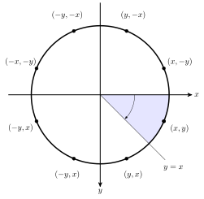
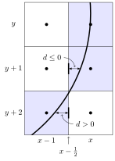
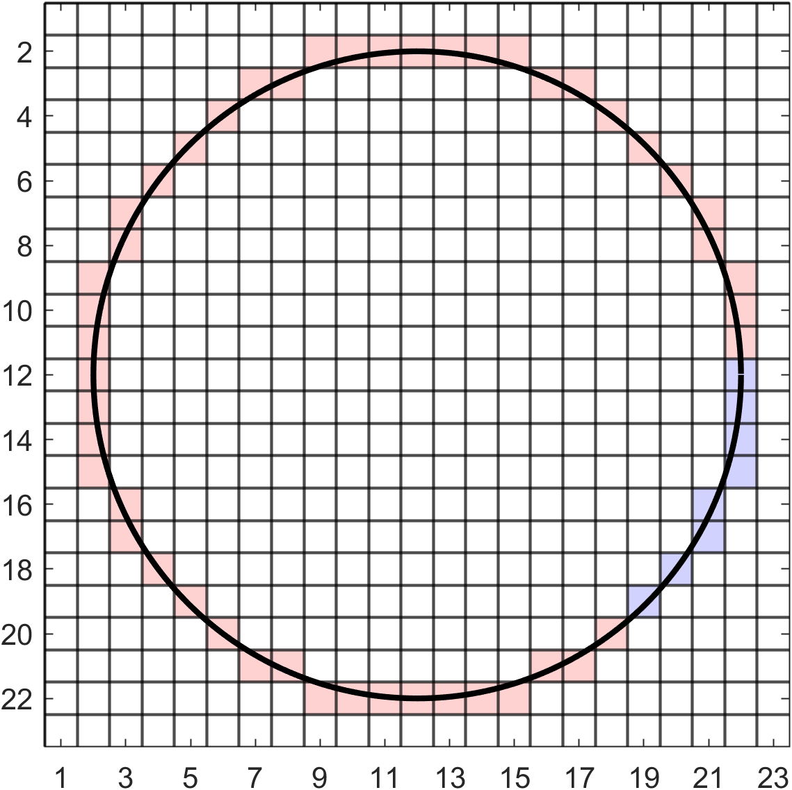

Drawing circles
Contents
Drawing circles#
Now that we have the ability to rasterise straight lines the next fundamental problem is the rasterisation of circles. This can be done by deriving a Bresenham-type algorithm that uses the Cartesian equation of a circle to determine which of two candidate pixels are plotted.
The circle line drawing algorithms can use the concept of circle symmetry to reduce the number of computations required to rasterise a circle. Consider Fig. 99 where a circle is centred at the origin. If the coordinate of a point on the circle in the shaded octant where \(x > y\) is known to be \((x,y)\) then the corresponding points on the circle in the other seven octants can be found via circle symmetry through combinations of \((\pm x,\pm y)\) and \((\pm y,\pm x)\).
{kind=link}

Fig. 99 Circle symmetry can be used to calculate points on a circle.#
For circles not centred at the original, which will be the case in the vast majority of applications, we calculate the co-ordinates of a point on the circle in the first octant \((x, y)\) and then add the co-ordinates of the circle centre \((c_x,c_y)\) giving the following eight pixel co-ordinates
The midpoint algorithm#
The midpoint algorithm [Pitteway, 1967] is a form of Bresenham’s algorithm that is used to draw circles. Consider the Cartesian equation of a circle centred at \((0, 0)\) with radius \(r\)
which an be rearranged to
Let \(f(x,y) = x^2 + y^2 - r^2\) then like Bresenham’s algorithm, the sign of \(f(x,y)\) tells us whether the pixel at \((x,y)\) is inside or outside of the circle
To derive an algorithm to rasterise a circle we assume that the circle is centred at \((0, 0)\) and we start at the pixel at the 3 o’clock position with pixel co-ordinates \((r,0)\). We then move clockwise around the circle calculating the pixels that lie closest to the idealised circle until \(x=y\) which is the end of the first octant. For each pixel co-ordinates we calculate, the pixel co-ordinates of the corresponding pixels in the 7 other octants are calculated using circle symmetry.
Once a pixel \((x,y)\) has been plotted we move down by one pixel so that \(y=y+1\) and we have a choice between the two pixels at \((x-1,y+1)\) and \((x,y+1)\) to plot next. Similar to Bresenham’s line drawing algorithm, we define a decision variable \(d=f(x-\frac{1}{2}, y+1)\) which is the distance between the plotted pixel and the midpoint between the two candidate pixels (Fig. 100).
{kind=link}

Fig. 100 Determining the pixels on a circle using the midpoint algorithm.#
The change in the value of \(d\), denoted by \(\Delta d\), depends upon which of the candidate pixels has been plotted. If \(d \leq 0\) then the pixel at \((x,y+1)\) has been chosen and \(\Delta d\) is the difference between \(f(x-\tfrac{1}{2},y+1)\) and \(f(x-\tfrac{1}{2},y+2)\)
Else if \(d > 0\) then the pixel at \((x-1,y+1)\) has been chosen and \(\Delta d\) is the difference between \(f(x-\tfrac{1}{2},y+1)\) and \(f(x - \tfrac{3}{2},y+2)\)
Since the first pixel to be plotted has the co-ordinates \((r,0)\), the initial value of \(d\) is the difference between \(f(r,0)\) and \(f(r-\tfrac{1}{2},1)\)
Here we have a floating point number in \(\frac{5}{4}=1.25\). To write down an algorithm that only uses integer numbers we simply round this number to \(1\)
We do not need to adjust the expressions for \(\Delta d\) since these used the values of the pixel co-ordinates.
Algorithm 9 (Midpoint algorithm)
Inputs A raster array \(R\), pixel co-ordinates of the centre of a circle \((c_x, c_y)\) the radius of the circle \(r\) and the colour of the circle line defined by the RBG triplet \(colour\).
Output A raster array \(R\).
\(x \gets r\)
\(y \gets 0\)
\(d \gets 1 - r\).
While \(x \geq y\) do
\(R(c_x \pm x, c_y \pm y) \gets colour\) (use circle symmetry to plot the 8 pixels)
\(R(c_x \pm y, c_y \pm x) \gets colour\)
If \(d \leq 0\) then
\(d \gets D + 2y + 3\)
Else
\(d \gets d + 2y - 2x + 5\)
\(x \gets x - 1\)
\(y \gets y + 1\)
Return \(R\)
Example 40
Use the midpoint algorithm to rasterise a circle centred at \((12, 12)\) with radius 10.
Solution
Stepping through the algorithm:
Adding the centre co-ordinates gives the following co-ordinates for the pixels on the first octant of the circle
Applying circle symmetry to determine the pixels in the other seven octants completes the circle.
